Publicación en Google Play Console y despliegue del backend en Render
Documento técnico | Versión 1.0
Este manual reúne, en el orden en que se ejecutan, los pasos para publicar la aplicación Android de Barber King en Google Play y para desplegar la API del proyecto en Render. Está pensado para que otra persona del equipo pueda repetir el proceso sin depender de la memoria de quien lo hizo la primera vez.
| Proyecto | Barber King, aplicación de reservas y gestión para barbería. |
| Documento | Manual de despliegue. Acompaña al manual de usuario y al manual técnico. |
| Autores | Hernando Botello Vargas y Yonanderson Marroquin. |
| Fecha | 12 de noviembre de 2026. |
| Repositorio | github.com/Hernando2007/barber-king, rama main. |
| Alcance | Cuenta de Google Play, firma del AAB, ficha de la tienda, prueba cerrada, producción, servicio web en Render, variables de entorno y verificación del servicio. |
Creación de la cuenta de desarrollador, verificación de identidad, pago único, firma del paquete, ficha de la tienda, seguridad de los datos y publicación.
Páginas 6 a 15.
Creación del servicio web, configuración del repositorio, variables de entorno, primer despliegue, verificación y operación diaria.
Páginas 16 a 21.
Sección 0 | Control del documento
| Nombre del sistema | Barber King, reservas y gestión de barbería. Aplicación Android con API en la nube. |
| Cliente | Barber King, barbería. Proyecto formativo del programa de Análisis y Desarrollo de Software. |
| Objetivo del documento | Describir el despliegue de la app en Google Play y de la API en Render, con las capturas del proceso real. |
| Versión | 1.0, oficial. |
| Fecha de elaboración | 12 de noviembre de 2026. |
| Ficha del programa | ____________________, se completa a mano al entregar. |
| Ubicación | documentacion/manual-despliegue.html y su versión PDF en documentacion/pdf/. |
| Fuentes | Cuenta real de Google Play Console, panel de Render del proyecto y guía interna de publicación. |
| Versión | Fecha | Cambio |
|---|---|---|
| 1.0 | 12 de noviembre de 2026 | Primera versión. Incluye la creación de la cuenta de Play Console, la firma del AAB, la ficha de la tienda, el despliegue en Render y la solución del aviso de proxy. |
| Actividad | Responsable | Entregable |
|---|---|---|
| Cuenta de Play y ficha de la tienda | Hernando Botello Vargas | Cuenta verificada y app publicada. |
| Firma y compilación del AAB | Yonanderson Marroquin | Paquete firmado y símbolos de ofuscación. |
| Backend en Render | Hernando Botello Vargas | Servicio activo en HTTPS. |
| Verificación final | Ambos autores | Lista de comprobación diligenciada. |
Con la firma se acepta que este manual describe el despliegue del sistema entregado en su versión 1.0 y que las cuentas, claves y servicios mencionados quedaron bajo custodia del cliente.
Contenido
| Ruta | Ubicación de un menú o de una carpeta dentro del proyecto. |
| Paso numerado | Acción que se ejecuta en el orden indicado. |
| Resultado | Lo que debe verse al terminar el procedimiento. |
| Advertencia | Riesgo de pérdida de datos, de dinero o de acceso a la cuenta. |
Sección 1
Barber King tiene dos piezas que se despliegan por separado. La primera es la aplicación Android, que se distribuye por Google Play y que el usuario instala desde la tienda. La segunda es la API construida con Node.js y Express, que corre en Render y atiende las peticiones de la app por HTTPS. Este manual cubre las dos.
El orden importa. Primero se deja el backend en línea, porque la app apunta a esa URL y sin ella no hay inicio de sesión ni reservas. Después se publica la app. Si se hace al revés, la versión que llega a los usuarios queda apuntando a un servicio que todavía no responde.
La app no guarda datos en el teléfono. Todo pasa por la API. La siguiente ruta muestra el recorrido de una petición y los servicios externos que participan.
| Entorno | API | Uso |
|---|---|---|
| Local | http://localhost:3000/api | Desarrollo en el equipo, con la base de datos de pruebas. |
| Producción | https://barber-king.onrender.com/api | App publicada y pruebas cerradas de Play. |
| Dato del proyecto | Valor |
|---|---|
| Identificador de la app | com.barberking.app |
| Versión | 1.0.0+1 |
| Rama de despliegue | main |
| Carpeta del backend | backend/ |
| Servicio en Render | barber_king, región Ohio (US East) |
| Documentos públicos | /public/politica-privacidad.html y /public/eliminar-cuenta.html |
Sección 1.3
Antes de abrir Play Console conviene tener todo a la mano. Cada cuenta tarda en verificarse y un dato faltante detiene el proceso a mitad de camino.
| Recurso | Costo | Para qué se necesita |
|---|---|---|
| Cuenta de Google Play Developer | 25 USD, pago único | Publicar y firmar la app. Se paga al finalizar el registro. |
| Cuenta de GitHub | Gratis | Repositorio que Render clona en cada despliegue. |
| Cuenta de Render | Plan gratuito | Servicio web de la API. Se suspende por inactividad. |
| Proyecto de Supabase | Plan gratuito | Base de datos, autenticación y tablas del sistema. |
| Cuenta de Cloudinary | Plan gratuito | Almacenamiento de imágenes. Obligatorio en producción. |
| Cuenta de Groq | Consumo por uso | Chat con inteligencia artificial y recomendación de cortes. |
| Correo SMTP | Según el proveedor | Recuperación de contraseña y verificación de correo. |
| Google Cloud Console | Gratis | Cliente OAuth de Android y registro de las huellas SHA-1. |
| Herramienta | Uso |
|---|---|
| Flutter 3.47.1 o superior | Compilar el AAB de release. El proyecto usa targetSdk 36. |
| Node.js 20 o superior | Ejecutar la API en local antes de desplegarla. |
| JDK con keytool | Crear el keystore y verificar la firma del paquete. |
| Microsoft Edge | Convertir este manual y el de usuario a PDF. |
| Git | Subir los cambios a la rama main. |
Sección 2 | Google Play Console
La publicación tiene seis momentos: crear la cuenta de desarrollador, verificar la identidad, crear la ficha de la app, firmar el paquete, surtir la prueba cerrada y enviar a producción. Las capturas de esta sección corresponden al registro real de la cuenta del proyecto.
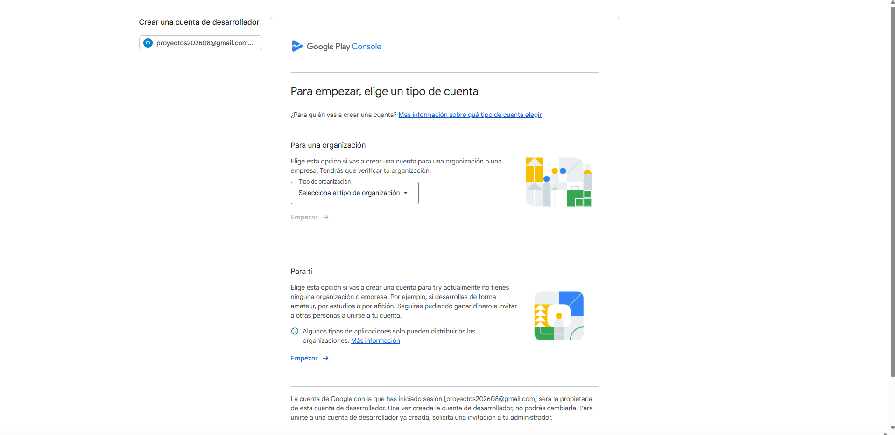
Sección 2.2
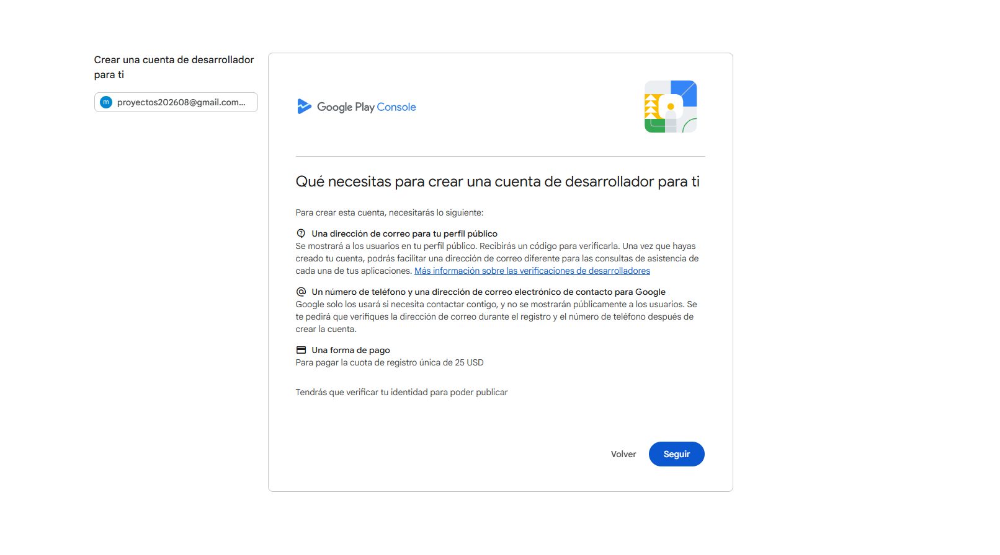
Sección 2.3
Play pide el nombre legal y la dirección tal como aparecen en el documento de identidad. Cualquier diferencia obliga a repetir la verificación y puede retrasar la publicación varias semanas.
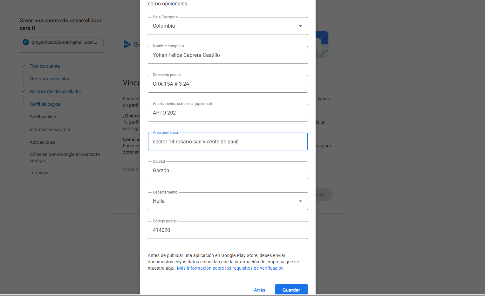
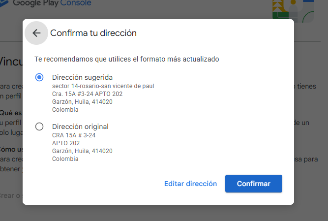
Sección 2.4
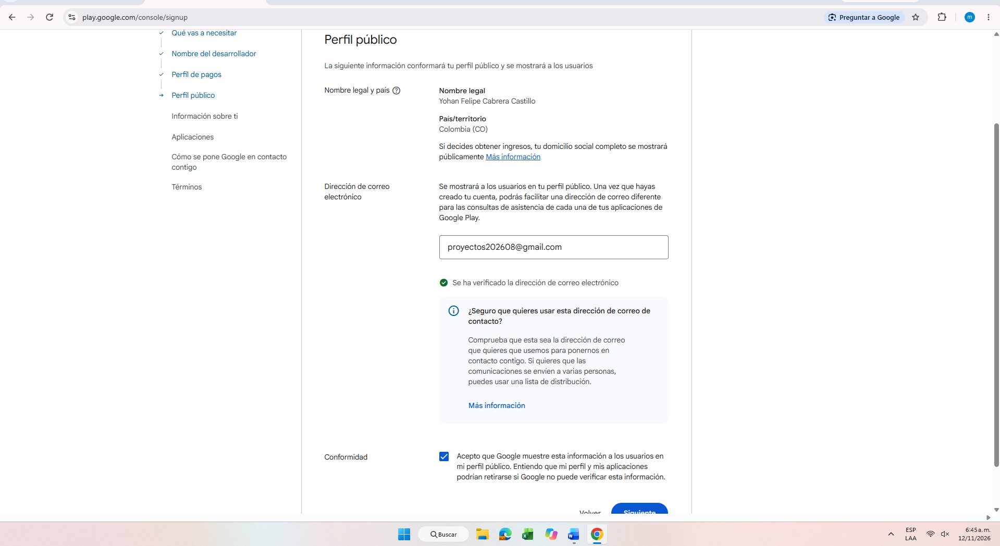
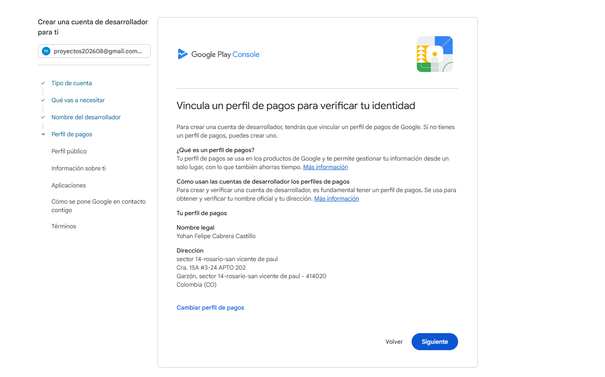
Sección 2.5
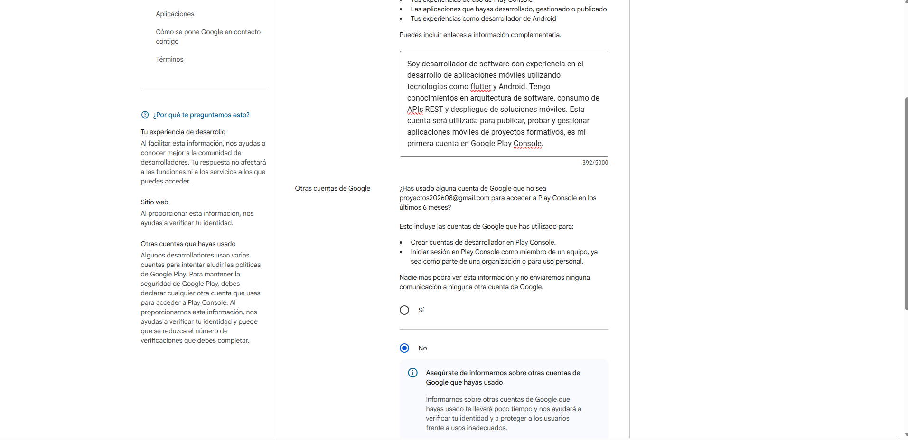
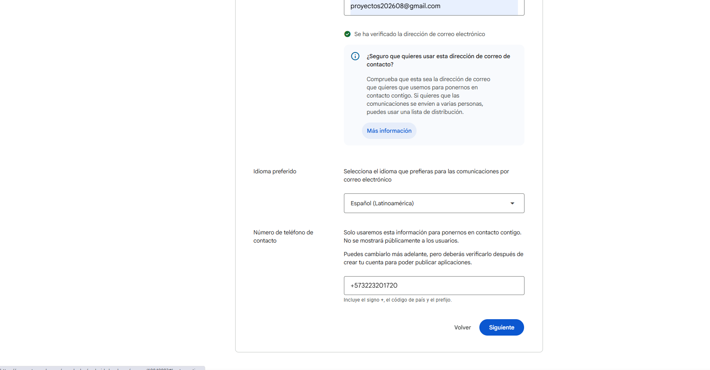
Sección 2.6
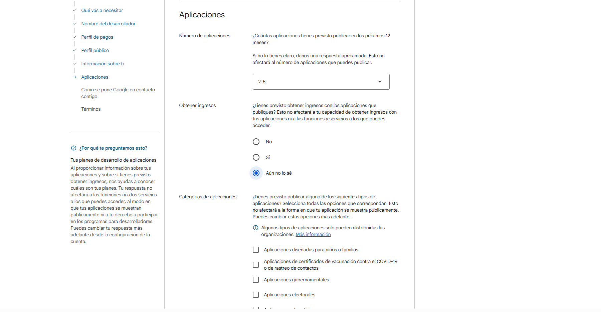
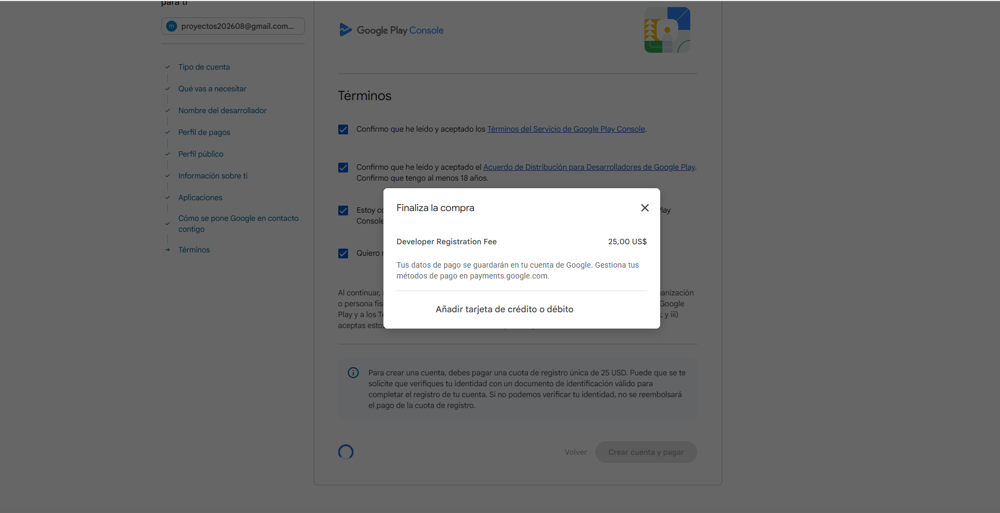
Sección 2.7
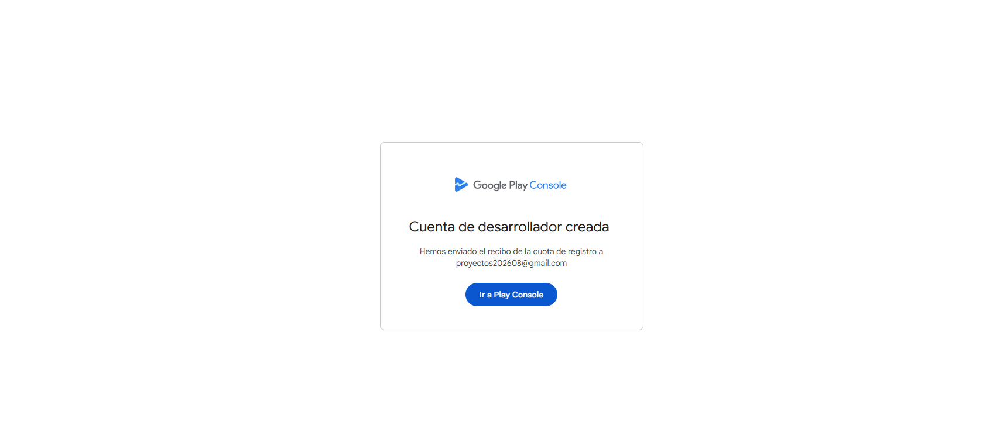
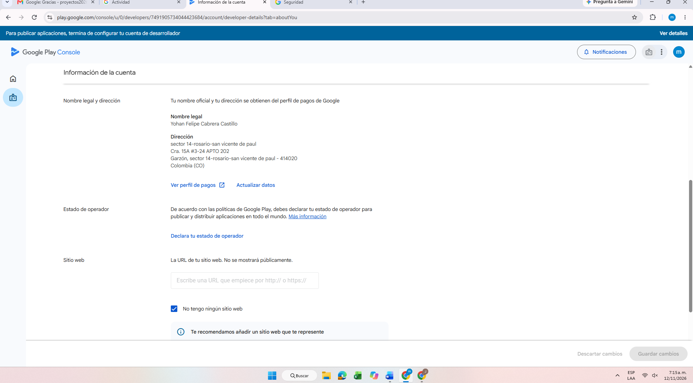
Sección 2.8
| Campo | Valor |
|---|---|
| Nombre | Barber King |
| Idioma predeterminado | Español (Latinoamérica) |
| Tipo de aplicación | Aplicación |
| Precio | Gratis |
| Declaraciones | Cumple las políticas y las leyes de exportación de Estados Unidos. |
Ese comando crea la identidad criptográfica de la app. Guarde el archivo y las contraseñas fuera del repositorio. Si se pierden, no se pueden publicar actualizaciones con la misma firma.
El paquete queda en build/app/outputs/bundle/release/app-release.aab. La verificación debe responder jar verified y mostrar el alias barber-king. Si aparece androiddebugkey, el AAB se firmó con la clave de depuración y Play lo rechazará.
Sección 2.9
| Elemento | Valor |
|---|---|
| Nombre | Barber King |
| Categoría | Estilo de vida |
| Descripción corta | Reserva cortes, encuentra barberos cerca y gestiona tus citas en un toque. |
| Descripción completa | Tomada de documentacion/play-store/textos-listing.md, menos de 4000 caracteres. |
| Icono | 512 x 512 px, PNG sin transparencia. |
| Gráfico destacado | 1024 x 500 px, PNG o JPG. |
| Capturas | Mínimo 2, máximo 8, formato vertical de teléfono. |
| Correo de contacto | hernandobotellovargas2007@gmail.com |
| Política de privacidad | https://barber-king.onrender.com/public/politica-privacidad.html |
| Práctica | Respuesta |
|---|---|
| Datos recogidos | Nombre, correo, teléfono, fecha de nacimiento, fotos, ubicación, citas, reseñas, chat y registros de errores. |
| Datos compartidos con terceros | Sí: Supabase, Render, Cloudinary, Groq y Google. |
| Cifrado en tránsito | Sí, mediante HTTPS. |
| Eliminación de datos | Sí, desde Mi perfil y por solicitud web. |
| Venta de datos | No. |
| Publicidad | No se usan datos para publicidad. |
La app exige iniciar sesión. En Acceso a la app se elige la opción de funciones restringidas y se cargan las cuentas demo de cliente, barbero y administrador con la contraseña Demo1234*. Esas cuentas deben existir en producción y probarse antes de enviar.
Categoría Estilo de vida, público 13+, sin violencia, sin contenido sexual, sin drogas ni apuestas. Se declara interacción entre usuarios por el chat y uso de ubicación. Sin anuncios.
Sección 2.10
Las cuentas personales nuevas deben surtir una prueba cerrada antes de habilitar producción. No es un trámite opcional: Play bloquea el paso hasta completar el periodo.
| Requisito | Detalle |
|---|---|
| Testers | Mínimo 12, con correos de Google activos. |
| Duración | 14 días consecutivos con la app instalada. |
| Pista | Prueba cerrada, no prueba interna. |
| Versión | El mismo AAB que se piensa publicar en producción. |
| Solicitud | Al terminar, se pide acceso a producción desde Play Console. |
Sección 3 | Backend en Render
Render hospeda la API de Express y la publica por HTTPS. El servicio se llama barber_king y se alimenta de la rama main del repositorio. Cada envío a esa rama puede disparar un despliegue automático.
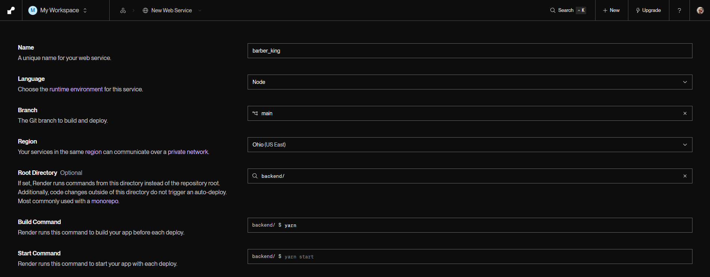
Sección 3.2
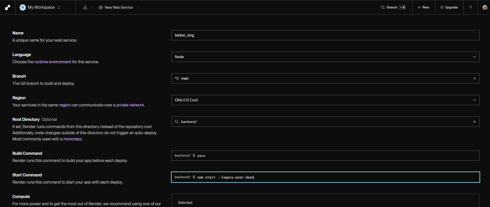
| Campo | Valor del proyecto | Observación |
|---|---|---|
| Name | barber_king | Define la URL barber-king.onrender.com. |
| Branch | main | Única rama de despliegue acordada. |
| Region | Ohio (US East) | No se cambia después de crear el servicio. |
| Root Directory | backend/ | Obligatorio por la estructura del repositorio. |
| Build Command | npm install | El repositorio trae package-lock.json. |
| Start Command | npm start | Ejecuta node index.js. |
| Runtime | Node 20 o superior | Coincide con engines del package.json. |
Sección 3.3
Las variables se cargan una por una o en bloque. Nunca se escriben en el repositorio. Al guardar, Render ofrece un despliegue inmediato para que el proceso las tome.
| Variable | Uso |
|---|---|
| NODE_ENV | production. Activa el límite de peticiones estricto de la API. |
| PORT | La asigna Render. No se escribe a mano en el panel. |
| APP_NAME | Barber King. Nombre visible en correos y mensajes. |
| FRONTEND_URL | Origen permitido por CORS. En producción, la URL pública de la app web. |
| SUPABASE_URL | URL del proyecto de Supabase. |
| SUPABASE_KEY | Clave de servicio. Permite leer y escribir en las tablas. |
| JWT_SECRET | Secreto largo y aleatorio para firmar las sesiones. |
| SMTP_HOST, SMTP_PORT, SMTP_SECURE | Servidor de correo saliente. |
| EMAIL_USER, EMAIL_PASS | Credenciales del buzón que envía los correos. |
| GROQ_API_KEY | Clave del asesor virtual y de la recomendación de cortes. |
| GROQ_MODELO_TEXTO | Modelo de texto. Por omisión, openai/gpt-oss-20b. |
| BARBERIA_ZONA_HORARIA | America/Bogota. Render corre en UTC y las citas dependen de la zona local. |
| GOOGLE_CLIENT_ID | Cliente OAuth de Android para el inicio de sesión con Google. |
| CLOUDINARY_CLOUD_NAME | Nombre de la cuenta de Cloudinary. |
| CLOUDINARY_API_KEY | Clave de la API de imágenes. |
| CLOUDINARY_API_SECRET | Secreto de la API de imágenes. |
Sección 3.4
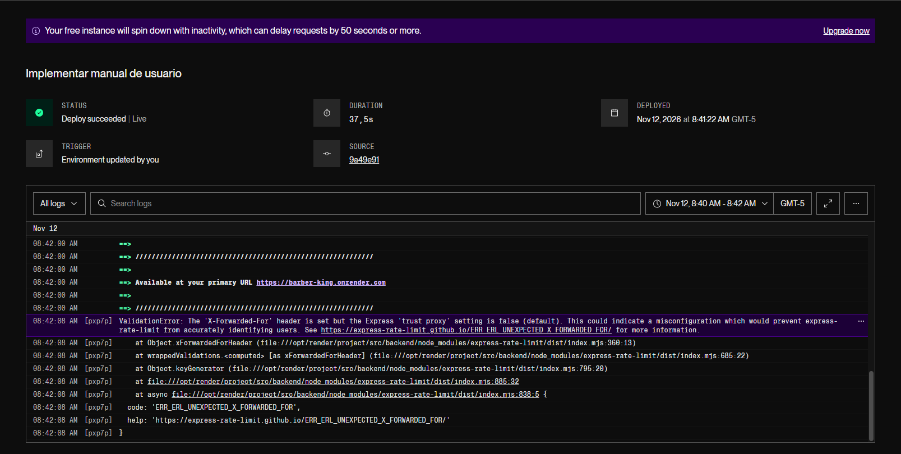
| Mensaje en el log | Causa probable |
|---|---|
| Cannot find module | Root Directory incorrecta o dependencias sin instalar. |
| Missing script: start | El comando se ejecuta fuera de backend/. |
| Error: listen EADDRINUSE | El servidor fija un puerto distinto al que asigna Render. |
| Variables undefined | Falta cargar el grupo de variables de entorno. |
Sección 3.5
En los registros de Render aparece el siguiente aviso cada vez que un cliente entra por el proxy del servicio:
Render termina el HTTPS y reenvía la petición con la cabecera X-Forwarded-For. Express viene con trust proxy en falso y el limitador de peticiones no puede identificar al cliente real. El aviso no tumba el servicio, pero contamina los logs y hace que el límite cuente a todos los usuarios como si fueran uno solo.
En backend/app.js, antes de registrar el limitador de peticiones, agregue:
Sección 3.6
| Frecuencia | Tarea | Dónde |
|---|---|---|
| Diaria | Revisar que el servicio responda y que no haya errores nuevos. | Render → Logs y /health |
| Semanal | Revisar consumo de Supabase y Cloudinary. | Paneles de cada servicio |
| Mensual | Revisar Android vitals y reseñas de Play. | Play Console |
| Por versión | Subir versionCode, compilar AAB, guardar símbolos y desplegar. | Flutter y Play Console |
| Por incidente | Rotar JWT_SECRET y contraseñas si hubo filtración. | Render → Environment |
La instancia se suspende por inactividad y tarda en responder la primera vez. Si se necesita disponibilidad continua, configure un monitor externo que consulte /health cada 10 o 15 minutos, o pase a un plan pago. El monitor debe apuntar a la URL pública, no a localhost.
El número después del signo más es el versionCode y debe crecer en cada envío. Play rechaza un AAB con un código repetido o menor. El AAB se firma siempre con el mismo keystore y los símbolos de cada versión se conservan.
Sección 4
Marque cada casilla antes de considerar terminado el despliegue. Si alguna queda pendiente, el lanzamiento no está completo.
Sección 5
| Síntoma | Causa | Solución |
|---|---|---|
| Play no deja enviar a revisión | Falta verificar identidad, teléfono o estado de operador. | Complete la configuración de la cuenta y espere la verificación. |
| Play rechaza el AAB | versionCode repetido, menor al anterior o firma de depuración. | Suba el versionCode y firme con el keystore de release. |
| El login con Google falla solo en Play | Falta la SHA-1 de Play App Signing en Google Cloud. | Registre la huella en el cliente OAuth de Android. |
| La app no conecta en el teléfono | Sigue apuntando a localhost o a una IP local. | Active useRemote en api_config.dart y recompile. |
| Render falla con Cannot find module | Root Directory vacía o dependencias sin instalar. | Configure backend/ y revise el Build Command. |
| Error EADDRINUSE al arrancar | El puerto está fijo en el código. | Use process.env.PORT en index.js. |
| Las fotos desaparecen | Se guardaron en el disco efímero de Render. | Configure Cloudinary y vuelva a subirlas. |
| Aparece ERR_ERL_UNEXPECTED_X_FORWARDED_FOR | Express no confía en el proxy de Render. | Agregue app.set("trust proxy", 1) antes del limitador. |
| La primera petición tarda casi un minuto | El plan gratuito suspendió la instancia. | Espere la reactivación o pase a un plan pago. |
| Las citas se muestran con otra hora | El servidor corre en UTC y falta la zona de la barbería. | Defina BARBERIA_ZONA_HORARIA=America/Bogota. |
| El correo de recuperación no llega | Credenciales SMTP incorrectas o remitente no verificado. | Revise SMTP_HOST, EMAIL_USER y EMAIL_PASS. |
| La revisión de Play pide acceso | Las cuentas demo no existen o cambiaron de contraseña. | Actualice Acceso a la app con credenciales vigentes. |
Sección 6
| Término | Definición |
|---|---|
| AAB | Android App Bundle. Formato de paquete que se sube a Play y que Google convierte en APK para cada dispositivo. |
| APK | Paquete instalable de Android. Es lo que descarga el usuario final. |
| applicationId | Identificador único de la app en el dispositivo y en Play. Para este proyecto: com.barberking.app. |
| Build Command | Comando que Render ejecuta para instalar dependencias antes de arrancar. |
| Cloudinary | Servicio externo donde se guardan las imágenes de la app. |
| Cold start | Demora de la primera petición cuando la instancia gratuita estaba suspendida. |
| Data Safety | Formulario de Play donde se declara qué datos recoge y comparte la app. |
| Health check | Consulta a /health para confirmar que el servicio está activo. |
| JWT | Token firmado que identifica al usuario después de iniciar sesión. |
| Keystore | Archivo que contiene la clave privada con la que se firma la app. |
| Play App Signing | Servicio de Google que firma los APK con su propia clave, distinta de la del desarrollador. |
| Prueba cerrada | Pista de distribución limitada a testers invitados, obligatoria para cuentas personales nuevas. |
| Root Directory | Carpeta del repositorio desde la que Render ejecuta los comandos. |
| SHA-1 | Huella del certificado de firma. Se registra en Google Cloud para el login con Google. |
| Supabase | Servicio de base de datos y autenticación usado por la API. |
| trust proxy | Configuración de Express que le indica que hay un proxy delante y que debe leer X-Forwarded-For. |
| versionCode | Número entero que debe crecer en cada envío a Play. En pubspec.yaml aparece después del signo más. |
| X-Forwarded-For | Cabecera que agrega el proxy con la dirección del cliente original. |
Fin del manual. Este documento se actualiza cada vez que cambie una cuenta, una URL, una variable de entorno o el proceso de publicación. La versión vigente vive en documentacion/manual-despliegue.html y su PDF en documentacion/pdf/manual-despliegue.pdf.
Barber King | Manual de despliegue | Versión 1.0 | Noviembre de 2026